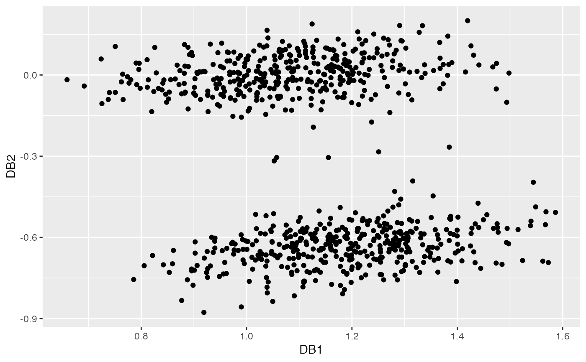

dobin.RdThis function computes a set of basis vectors suitable for outlier detection.
dobin(xx, frac = 0.95, norm = 1, k = NULL)The input data in a dataframe, matrix or tibble format.
The cut-off quantile for Y space. Default is 0.95.
The normalization technique. Default is Min-Max, which normalizes each column to values between 0 and 1. norm = 0 skips normalization. Other values of norm defaults to Median-IQR normalization.
Parameter k for k nearest neighbours with a default value of 5% of the number of observations with a cap of 20.
A list with the following components:
rotationThe basis vectors suitable for outlier detection.
coordsThe dobin coordinates of the data xx.
YspaceThe The associated Y space.
YpairsThe pairs in xx used to construct the Y space.
zerosdcolsColumns in xx with zero standard deviation. This is computed only if the number of columns are greater than the number of rows.
# A bimodal distribution in six dimensions, with 5 outliers in the middle.
set.seed(1)
x2 <- rnorm(405)
x3 <- rnorm(405)
x4 <- rnorm(405)
x5 <- rnorm(405)
x6 <- rnorm(405)
x1_1 <- rnorm(mean = 5, 400)
mu2 <- 0
x1_2 <- rnorm(5, mean=mu2, sd=0.2)
x1 <- c(x1_1, x1_2)
X1 <- cbind(x1,x2,x3,x4,x5,x6)
X2 <- cbind(-1*x1_1,x2[1:400],x3[1:400],x4[1:400],x5[1:400],x6[1:400])
X <- rbind(X1, X2)
labs <- c(rep(0,400), rep(1,5), rep(0,400))
dob <- dobin(X)
autoplot(dob)
